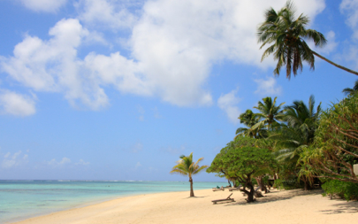

Aitutaki

Kirkegang i paradis
mandag den 24. marts 2008

Øde strand med palmer så langt øjet rækker, en stor lagune med koraller og fisk og udsigt til en smuk solnedgang over Stillehavet - så har vi fundet vores eget lille paradis. Vi nyder stilheden og nedenfor vores lille hus har vi en stor hængekøje, hvor man passende kan ligge og filosofere over rejsen og over livet i al almindelighed.
Igen blev vi i lufthavnen mødt med blomsterkranse, ukulele musik og frisk kokosmælk. Vores hotel er skønt, der er kun 28 værelser og alle ligger ugenert. Vi er så langt nede i gear, at det er en stor udfordring bare at bevæge sig hen til swimmingpoolen.
I går fik Viola dog flettet sig en rigtig flot taske af palmeblade, vi fik cyklet på vandcykel og sejlet i kajak.
I dag har Viola og jeg så været i kirke :
Kl. 9.45 bliver vi afhentet og kørt til Cook Islands ældste kirke, der er bygget at sorte koraller. Kirken er fyldt med Mama’er (ældre damer) med kjoler i stærke farver og pyntede hatte, piger fra søndagsskolen, en masse barfodede børn og lidt mænd. Man kan komme løbende under gudstjenesten, der foregår mest på Maori og en smule på engelsk. Alle vinduer er åbne eller mangler og ud af dem, kan jeg se det blå blå hav. Gudstjenesten består mest af sang, og hvilken sang. I denne kirke synger kirkegængerne de ældste maori hymner på en måde som ikke ligner noget jeg tidligere har hørt.
Der giver kuldegysninger at stå her på den anden side af jorden og opleve så smukke stemmer. Viola lytter også med, men hun finder hurtigt en lokal pige, som hun sætter sig sammen med. Det er en ret afslappet kirkegang. Børnene løber rundt, men de er stille, og søndagskolepigerne falder i dyb søvn, når der ikke synges - alle har deres fineste søndagstøj på.
Efter gudstjenesten, hvor der forresten blev samles penge ind i fiskenet, bliver vi budt på kagebord i søndagsskolen sammen med de ældre Mama’erne og øens eneste hjemløse mand. Det er meget fornemt, men vi må dog forlade kirken efter kort tid, da de skal begrave en af landsbyens ledere. Viola og jeg drager hjem en kæmpe oplevelse rigere.
Vi fornemmer, at vi langt væk, da vi ser et stort skib ankre op uden for revet. Det er de månedlige forsyninger fra New Zealand. En skib, det er det. Her på øen dyrkes pawpaw og andre frugter, alt andet skal importeres.
Aitutaki rejser sig 4000 meter fra Stillehavets bund. Øen, mener man, blev beboet første gang ca. 900 før Kristi fødsel af den store polynesiske opdagelsesrejsende Ru.Første gang en europæer besøgte øen var i 1789 da kaptajn Bligh ankom ombord på Bounty - kort før det berømte mytteri. Den første missionær på Cook Island ankom til Aitutaki, og fik bygget den imponerende kirke, som jeg besøgte i dag.
Nu vil vi lægge os ned og nyde stjernehimmelen.
/Camilla
Ja, her er vi så nu. En øde strand helt for sig selv, et hav fyldt med fisk og familien.